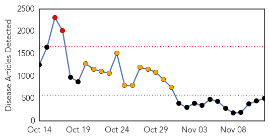
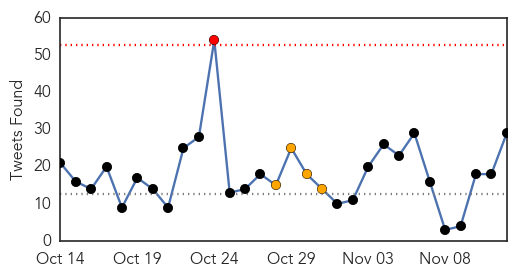
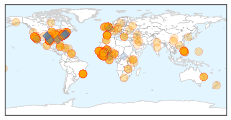
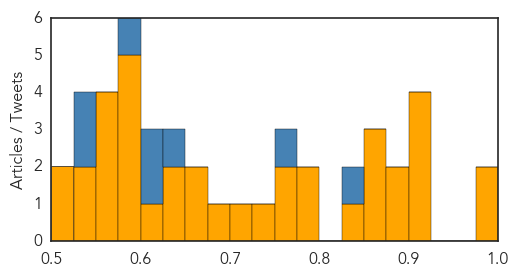

Ebola
30-Day Web Trend
2 alerts, 12 warnings

30-Day Twitter Trend
1 alerts, 4 warnings

Article Locations

Article Confidences

Top Articles:
- 1.000
- WFMJ.com News weather sports for Youngstown-Warren Ohio
- 1.000
- Ebola death toll passes 5000, says World Health Organisation
- 1.000
- Mali confirms its second and third Ebola deaths
- 1.000
- Ebola death toll tops 5,000; Mali quarantines 90
- 1.000
- Doctor Tests Positive For Ebola, Health Workers Go On Strike, Clinic To Shut Down?
- 1.000
- Latest Ebola News: Canada announces Ebola quarantine measures
- 1.000
- Ebola in Sierra Leone: Another doctor acquires Ebola
- 1.000
- Death Toll Reaches 5,000 and Other Facts
- 1.000
- Registered Nurses on Strike, Demand Safety in Treating Ebola Patients
- 1.000
- Question of the Week: Ebola
- 1.000
- Mali scrambles to contain Ebola after new confirmed death of nurse, Africa News & Top Stories
- 1.000
- Liberia sees drop, Mali has new Ebola case
- 1.000
- Worst Ebola outbreak on record tests global response
- 1.000
- More than 5,000 have now died of Ebola, World Health Organization reports
- 1.000
- Ebola epidemic marks another grisly toll
- 1.000
- MNN - Mother Nature Network
- 1.000
- Lawmakers question Obama's $6-billion request for Ebola funding
- 1.000
- Ebola Cases Dramatically Increase As Another Doctor Tested Positive For The Deadly Virus
- 1.000
- Mali quarantines 90 after nurse's death as Ebola toll tops 5,000
- 1.000
- Ebola virus: Second outbreak in Mali as imam and nurse who treated him die of disease
- 1.000
- telling the difference
- 1.000
- Deploying Technology in the Fight Against Ebola
- 1.000
- Global scare
- 1.000
- Worst Ebola outbreak on record tests global response
- 1.000
- Ebola death toll passes 5,000-mark: WHO
- 1.000
- WHO says more than 5,000 have now died of Ebola
- 1.000
- UN encourages travel to 'vibrant' Ebola-hit West Africa
- 1.000
- Mali quarantines dozens after Ebola kills second victim in fresh outbreak
- 1.000
- WHO appeals for more funds as Ebola deaths pass 5,000
- 1.000
- Ebola outbreak: World Health Organization says death toll has now topped 5,000
- 1.000
- Ebola outbreak: deaths exceed 5,000, WHO says
- 1.000
- With Doctor's Release, There Are No Ebola Patients In The U.S.
- 1.000
- With Doctor's Release, There Are No Ebola Patients In The U.S.
- 1.000
- Public health scores Ebola victory as New York doctor goes home
- 1.000
- Ebola death toll crosses 5,000 mark
- 1.000
- Experts urge caution over Ebola hopes
- 1.000
- Has the world stopped caring? — RT UK
- 1.000
- Ebola workers ask Congress for help
- 1.000
- Ebola death toll passes 5,000-mark: WHO
- 1.000
- Ebola Virus Disease Early Detection May Be Getting Closer
- 1.000
- US is now Ebola-free!
- 1.000
- Ebola outbreak deaths pass 5,000
- 1.000
- Ebola death toll crosses 5,000 mark
- 1.000
- Nurses strike over Ebola concerns, as death toll ticks above 5,000
- 0.999
- Ebola death toll tops 5,000; steep rise in Sierra Leone cases - WHO
- 0.999
- Last US Ebola patient declared cured
- 0.999
- EU boosts Ebola aid to 1 billion euros
- 0.999
- Ebola death toll tops 5,000; Mali quarantines 90
- 0.999
- Ebola Outbreak Deaths Pass 5,000
- 0.999
- 12/11/2014 UN special envoy on Ebola says combating stigma integral to overall crisis response (United Nations General Assembly)
Showing top 50 articles...
Top Tweets:
- 0.971
- RT: Cas Ebola confirme à Bko. Clinique Pasteur en quarantaine. Intensifier mesures de prévention. Appeler numéros verts pour t…
- 0.899
- RT: Intense Ebola transmission in west and north Sierra Leone. 421 confirmed new cases reported in the country last week.
- 0.869
- CDC focuses on country-specific epidemiology & needs during Ebola response w/ ground support in Liberia Sierra Leone & Guinea. GSF2014
- 0.861
- RT: Latest Ebola figures: 14098 cases with 5160 deaths. Mali: "Total of 4 confirmed and probable cases and 4 deaths have been…
- 0.858
- RT: Ebola response lab staff required for PHE labs. Superb training prior to deployment provided. email ebola.deployment@phe.gov.…
- 0.839
- RT: 97 confirmed and probable Ebola cases reported in Liberia last week. After decline in new cases now seems to be spreading at …
- 0.838
- . Ebola virus outbreak in West Africa: update and lessons learnt ebolaresponse via http://t.co/TxxTmTNbQi
- 0.811
- RT: The last Ebola-free district in Sierra Leone is now an Ebola 'hotspot' Todd Frankel writes in the Washington Post http://…
- 0.769
- Unsafe burial practices are a major cause of new Ebola cases in Sierra Leone. This week's EbolaBigIdea is SAFE BURIALS SAVE LIVES
- 0.736
- RT: the late imam who is believed to be the source of new ebola outbreak in mali still hasn't been tested for ebola. his body …
- 0.705
- RT: World Health Organization says the number of Ebola deaths has passed 5000: http://t.co/9AGvCk9Ssf
- 0.702
- Mali confirms its second fatal case of Ebola virus disease @WHO http://t.co/ihXNmFxVyd
- 0.700
- If last week's SL case count (421) were an Ebola outbreak it would be 2nd largest outbreak on record. 1st=2000 Uganda 425 cases.
- 0.665
- RT: Clusters of outbreakcontinued reporting of new cases - @HansRosling on why the Ebola fight in Liberia goes on: http…
- 0.663
- Nutritional care of children and adults with Ebola virus disease in treatment centres ETU UNICEF WFP http://t.co/zFKlHHIbHO
- 0.657
- Emerging disease threats incl Ebola remind us of the impt of detecting controlling & reporting diseases early & efficiently. GSF2014
- 0.656
- RT: Austin area Ebola meet-up with authors of "Virus Hunters of the CDC" Drs. McCormick & Fisher-Hoch utBIO330 11/13/14 htt…
- 0.628
- RT: Pour lutter contre l’épidémie d’Ebola des stars de la musique africaine enregistrent le titre AFRICASTOPEBOLA http://t.c…
- 0.627
- Ebola crisis: Sierra Leone health workers strike. http://t.co/rDsQRh1aX6
- 0.606
- Ebola death toll tops 5000; steep rise in Sierra Leone cases: WHO. http://t.co/a9uWJJr39H
- 0.600
- 'Ebola is a health issue. But equally its a governance & accountability issue' @SFCG_ Liberia Director Oscar Bloh EbolaCrisis
- 0.597
- This explains a lot of the 'whys' & 'hows' people have re: the Ebola epidemic and its continual spread. Plz watch. https://t.co/htwmu1OZRH
- 0.567
- Flu & Ebola have some similar symptoms. Flu is common Ebola is very rare. http://t.co/QTmauZZdUF getafluvax http://t.co/doVphMaT0j
- 0.563
- Ebola crisis: Sierra Leone health workers go on strike. http://t.co/YJfxngsiPj
- 0.562
- Ebola Today: Filipino Soldiers Quarantined on Island; Two Die of Ebola in Mali. http://t.co/w4BbDFUXHu
- 0.560
- Ebola death toll tops 5000; steep rise in Sierra Leone cases: WHO http://t.co/Byb6VJKRcm via
- 0.545
- Why is supplying PPE so crucial? About half of SL's Ebola cases are health workers & this is crippling SL's healthcare infrastructure. (4/5)
- 0.535
- RT: Mali's new Ebola case separate from the first was a nurse who died on Tuesday. Another doctor is quarantined. http://t.…
- 0.521
- RT: Mali’s Ministry of Health has confirmed the country’s second Ebola fatal case in a nurse who worked in Bamako http://t.co/oTsqKS…
Unknown
30-Day Web Trend
0 alerts, 0 warnings

30-Day Twitter Trend
1 alerts, 0 warnings

Article Locations


Article Confidences
Top Articles:
- 0.993
- Flu vaccination clinic is Thursday
- 0.978
- Number of Portuguese infected with Legionnaires' disease rises to 278
- 0.917
- Chicago Tribune
- 0.917
- Chicago Tribune
- 0.917
- Chicago Tribune
- 0.910
- The world windows to Thailand
- 0.899
- the edge of knowledge
- 0.898
- Portugal traces deadly Legionnaires' outbreak to cooling towers
- 0.866
- Ukraine ceasefire must be observed
- 0.862
- Virus may affect mental abilities
- 0.853
- Political crisis in South Sudan hinders access to antimalarial drugs
- 0.837
- Portuguese plant's cooling towers blamed for legionnaires' outbreak
- 0.798
- Kenya's Catholic bishops warn tetanus vaccine is 'disguised population control'
- 0.787
- Do something really dumb today? Blame it on the 'stupidity virus'
- 0.769
- RUH Advises Local Residents On Norovirus Risk
- 0.759
- 12,000 die of diseases in E. Visayas
- 0.750
- 'Stupidity Virus' Lives In People's Throats, Crosses Over From Algae In Lakes
- 0.720
- Specific gene may help protect against typhoid fever
- 0.683
- TB test results from Shaw High to be released Wednesday
- 0.674
- After Takhatpur, death stalks women at Pendra & Marwahi
- 0.661
- Water contamination claims one life in Gujarat town
- 0.641
- Tetanus Vaccine Laced With HCG Conspiracy or Truth?
- 0.628
- Transfers of doctors to increase patient load
- 0.604
- Sterilisation botch-up: AIIMS docs visit hospitalised women in Chhattisgarh
- 0.596
- Sterilisation Botch-up: AIIMS Docs Visit Hospitalised Women
- 0.594
- Chronic care coordinators improve diabetes monitoring but not blood sugar control
- 0.588
- What really ails Phl public health system
- 0.583
- Middlesex-London Health Unit Nurses in Mediation Today: -- LONDON, Nov. 12, 2014
- 0.580
- Pneumonia vaccine too expensive
- 0.574
- India suspends officials over botched surgery
- 0.555
- One in three Nigerian men are hypertensive
- 0.551
- US and China reach ‘historic’ carbon emission deal
- 0.551
- Russian troops crossing into Ukraine, NATO says
- 0.534
- 12 Women die after sterilization operations in India
- 0.527
- Cervical Cancer Common among People without Immunization against HPV
- 0.510
- Is the WHO Using Vaccines to Secretly Sterilize Women All Over the Globe?
- 0.505
- AKC Canine Health Foundation Takes Aim at Periodontal Disease in Dogs
Top Tweets:
- 0.846
- Debate HCW vaccination flusymposium flu
- 0.758
- Won't we get compliance without compulsion. @HCW flu vaccination flu flusymposium
- 0.639
- 18-20% of healthcare workers get hit by flu and pose risk for patients and risk abseeineeism flusymposium flu
- 0.625
- Kylie Carville: Vaccine Effectiveness 2007-2013: 55% flu flusymposium
- 0.609
- Amalie Dya: No measure for adult flu vaccination coverage in Australia. There is no 'whole of life vaccination register!' flu flusymposium
- 0.599
- .@WHEheal is supporting the Sierra Leone Ministry of Health by supplying PPE for health facilities that lack them. (3/5)
- 0.545
- Don’t let flu ruin your Thanksgiving plans. Get a flu vaccine today since it takes 2 wks for fluvax to provide protection. getafluvax
- 0.535
- 'Ongoing ethical debate has limited introduction of mandatory flu vaccination programs in Oz' flu flusymposium